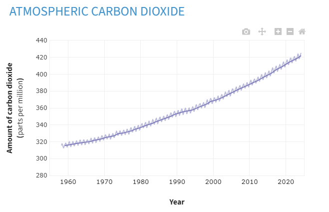

Carbon dioxide (CO2) emissions play a significant role in driving global warming, contributing to the disruption of Earth's climate systems and the exacerbation of extreme weather events. CO2 is a greenhouse gas that traps heat in the Earth's atmosphere, preventing it from escaping back into space. Human activities, such as burning fossil fuels for energy, deforestation, and industrial processes, have led to a dramatic increase in CO2 levels in the atmosphere since the industrial revolution. This unprecedented rise in CO2 concentrations has intensified the greenhouse effect, causing temperatures to rise and altering weather patterns worldwide. The consequences of global warming are far-reaching, including rising sea levels, melting ice caps and glaciers, more frequent and severe heatwaves, droughts, floods, and storms. These impacts not only pose threats to human health, infrastructure, and ecosystems but also exacerbate social and economic inequalities, disproportionately affecting vulnerable communities. Addressing the challenge of CO2-induced global warming requires collective action to reduce emissions, transition to renewable energy sources, and implement policies that promote sustainability and resilience.
A qoute from REBECCA LINDSEY a climate.go journalist
"If global energy demand continues to grow rapidly and we meet it mostly with fossil fuels, human emissions of carbon dioxide could reach 75 billion tons per year or more by the end of the century. "read more